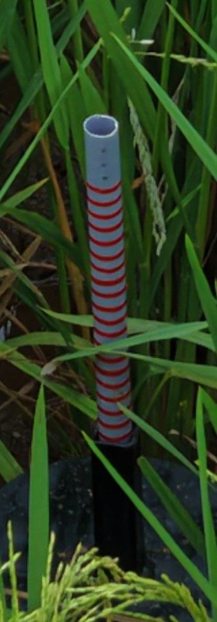
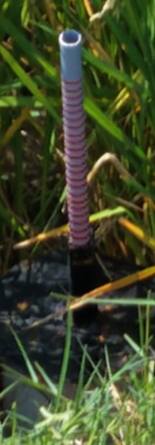
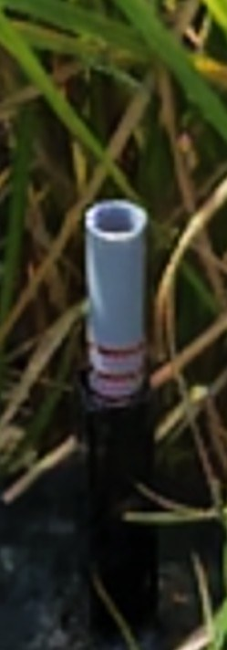

Read the gauge in most photos, not half of them.
Each paddy field has a float gauge: the more red rings show above the sleeve, the more water. A drone photographs it every day. v1 reads those rings, says when it is sure, and sends the rest to a person.
Watch the tour Try it on real photos
90-second tour: the company's detector, the colour method and our reader on the same photos, and how v1 takes the best idea from each. Captions are in the picture; a text track is also available from the player menu.
Half the photos never give an accepted reading.
Carbon credits for alternate wetting and drying need proof that each field really dried out between irrigations. The proof is a float gauge read every day from a drone photo.
The current detector accepts a reading only at confidence 0.7 or more. On the company's own photos, about half the good gauges reach that bar. The rest stay in review, even when their count was right.
Why photos fail
- Rice leaves and seed heads cover rings.
- The drone looks down at an angle, so rings look like thick arcs.
- Rods lean; a fixed upright window slides off them.
- Rings in shade are dark red, below the colour rule's brightness floor.
- Far or blurred shots leave too few pixels per ring.
Measure the rod, don't just count the rings.
- Find the gauge by its ring stack: three or more separate red bands on one upright line. A rod split by a leaf is joined back up.
- Straighten it. The rod's own lean and bend are measured, so a tilted rod reads like an upright one.
- Read the ring rhythm. Rings repeat at a fixed spacing, so the count runs from the first ring to the last and includes the ones a leaf hides.
- Say how sure it is. A small trained model turns the reader's signals into the chance the count is exactly right. Above 0.7 it is accepted, the company's own bar.
- Check it makes sense. A reading that breaks the gauge's physics is never accepted. Two shots that disagree go to a person.



Real crops from the pilot photos, metadata removed.
Every photo through every method
127 drone photos, 7 fields, 66 visits, 23 September to 6 October 2026. Ring counts were read by eye and checked by a person on two random samples of 15 (the second matched 15 of 15).
| Method | Accepted & exact | Accepted | Right when accepted | Exact, all photos |
|---|---|---|---|---|
| v0: current detector (rebuilt) | 19/127 = 15.0% | 37.0% | 40.4% | 15.7% |
| Colour method | 51/127 = 40.2% | 81.1% | 49.5% | 51.2% |
| v1 | 97/127 = 76.4% | 89.0% | 85.8% | 82.7% |
v0 is the current detector, rebuilt from its written description; its 50% is measured on the company's photos, these photos are harder for it (its brightness floor drops shaded rings). v1 reads the ring rhythm (the ring gap can't lock onto a multiple of itself, and rings are counted gap by gap because perspective stretches the gap along the rod) and uses the colour method's locator when the rod finder sees nothing. Its confidence model is trained on six fields and scored on the seventh, for each field in turn. The reader's rules were designed on these same photos, so the next batch of field photos is the real test.
One photo in, one accepted reading or a review flag out.
What is built and tested: 17 features
| Feature | Closes the gap | Runs |
|---|---|---|
| Finds the gauge by its ring stack | v0 picks the pinkest upright column and loses leaning rods | On-premises |
| Joins a rod split by a leaf | a leaf across the rod split it into two short pieces | On-premises |
| Straightens tilted and bent rods | a fixed upright window drifts off a rod leaning 5-9 degrees | On-premises |
| Counts rings hidden by leaves from the ring rhythm | counting visible bands misses covered rings | On-premises |
| Reads shaded and washed-out rings | v0's brightness floor (value >= 50%) drops shaded rings | On-premises |
| Ignores a faint pink sleeve rim | a stained rim was counted as an extra ring | On-premises |
| Reads an all-grey rod as 0 rings (dry), not 'not found' | v0 gives no reading when no stripe shows | On-premises |
| Trained confidence: 0.7 means probably exact | v0's confidence keeps right readings below 0.7 | On-premises |
| Company acceptance rule and folder average | same rule as v0, so results compare like for like | On-premises |
| Level against the guide and soil state | same output as v0: Flooded, Saturated, Drying, Irrigate now | On-premises |
| Two-shot check per visit | two shots that disagree go to review | On-premises |
| One-day spike check per plot | a single impossible jump is flagged | On-premises |
| Demo app: gallery of every photo with every method's reading | see v0 and v1 side by side on real photos | On-premises and hosted |
| Live reading of an uploaded photo | try v1 on a new photo | On-premises and hosted |
| PIN sign-in with admin and user roles | the photos are client data | On-premises and hosted |
| CSV export of every reading | hand the results to the field team | On-premises and hosted |
| Pilot capture guide | blurred and far shots are read right only about half the time | On-premises |
Now, next, later
Now
- v1 reader with trained confidence
- Demo on the 127 pilot photos
- Capture guide for pilots
Next
- Score v1 on the company's own labelled photos
- Confirm the ring-to-centimetre scale
- Add sharpness to the confidence score
- Test the bad-gauge check on a real broken gauge
Later
- Trained detector for very far shots
- Burst and low-angle capture trial
- Daily batch run per field
Two ways to run it
On-premises
Runs on your own machine under a process manager that restarts it after a crash or reboot. It reads full-size photos and keeps corrections.
python -m gauge.web 6900
Hosted demo
The same code on Vercel, flipped by environment settings only. Uploads are shrunk to 2048 px in the browser (the host caps a request at 4.5 MB), and corrections are not stored.
CM_CLOUD=1 CM_SECRET=... CM_ADMIN_PIN=... CM_USER_PIN=...
Moving from v0
- Same inputs: one drone JPEG per shot, a folder per visit.
- Same rule: accept at confidence 0.7; a visit takes the mean of its accepted photos; none accepted means review.
- Same outputs: centimetres, level against the guide (count minus 10), and soil state. CSV export from the demo.
- Open item: 1 ring = 1 cm is taken from the current detector's description and still needs the company's confirmation.
See it on the real photos
Every pilot photo with the v0, colour-method and v1 readings side by side, and a live reading of any gauge photo you upload. Sign-in needed: the photos belong to the fields.
Open the demo Read the docs